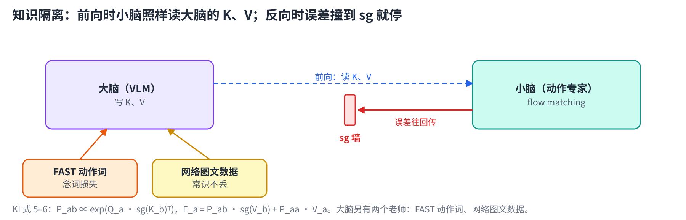
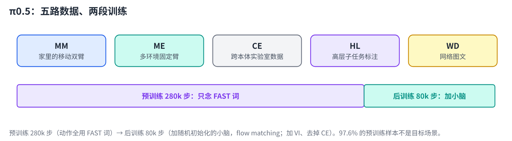
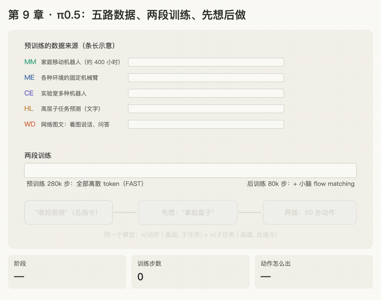

第 9 章 · 知识隔离与 π0.5：别让小脑把大脑的常识冲掉
本地运行
git clone https://github.com/wikieden/vla-from-scratch
cd vla-from-scratch/code/notebooks
pip install jupyterlab torch numpy
jupyter lab ch09_knowledge_insulation.ipynb也可以下载后直接用 VS Code 打开 .ipynb 运行。需要 GPU 的章节在 Colab 里选「代码执行程序 → 更改运行时类型 → GPU」。
本章回答：π0 一起训练大脑和小脑，会出什么问题？知识隔离（knowledge insulation）怎么解决？π0.5 的训练配方是什么？
讲解日期：2026-11-09 起 · 上一章：第 8 章 π0 · 下一章：第 10 章 慢想快做：分层系统（待讲）
本章缩写：KI = Knowledge Insulation（知识 / 隔离）；π0.5 = π0 的下一代；FAST = Frequency-space Action Sequence Tokenization（频率空间 / 动作序列 / 分词，第 7 章）；VLM = Vision-Language Model（视觉 / 语言 / 模型）；梯度（gradient）= 告诉每个参数"往哪边改、改多少"的信号。全表见 appendix-glossary.md
对应原文：materials/text/papers/knowledge-insulation-2505.23705.txt（下称 KI 论文）、materials/text/papers/pi05-2504.16054.txt
讲解
第 1 步：两难，一起训练会冲掉常识，冻住又学不会
对应原文：KI 论文第 98–103 行（引言）、第 161–162 行（π0 的问题）、第 262–284 行（图 2 勺子例子、冻住不行）、第 488–507 行（听指令实验）。
先补一个词：梯度
训练就是"做错了就改"。每做一次，算出误差有多大，再算出每个参数该往哪边改、改多少，这个信号就叫梯度。梯度沿着计算的路线倒着往回传：误差从输出出发，经过哪些参数算出来的，就会改到哪些参数。
回顾第 8 章插问 2：小脑（动作专家）每一层都通过 attention 读大脑的 K、V。这条路是双向的：前向时小脑读大脑；训练时，小脑的动作误差也会顺着这条路倒流进大脑，改动大脑的 \(W_K\)、\(W_V\) 和更深处的参数。
问题出在哪：小脑一开始是随机的
- 大脑从 PaliGemma 来，已经学好了看图、读指令的常识；
- 小脑是新加的、随机初始化的（KI 论文第 98–100 行："initialized from scratch"，要"嫁接"到大脑上）；
- 训练刚开始，小脑乱出动作，误差很大，而且误差的"方向"没什么道理。这些乱七八糟的梯度倒流进大脑，把大脑原来学好的东西改坏了。
KI 论文的原话大意：π0 的做法会让听指令能力和训练速度都变差，因为动作专家的梯度损坏了预训练好的 VLM（第 161–162 行）；作者推测原因是"梯度干扰"（gradient interference，第 269–270 行）。
论文里的例子（图 2，第 274–281 行）：让机器人"把勺子放进垃圾桶"，π0 不管指令，去抓了一块垃圾。它看图知道"桌上有东西可以收拾"，却不再认真听指令说的是哪个。论文还发现，π0 要比别的做法多训练很多步才收敛（第 488–490 行）。
白话类比：老员工和新实习生
老员工（大脑）经验丰富，实习生（小脑）什么都不会。两人一起干活，干砸了，老板把两人一起批。实习生干砸本来是因为他不会，可老员工也挨了批，就开始怀疑自己、改掉原来正确的习惯，比如不再仔细看工单（指令）了。
那把大脑冻住，不让它改，行不行？
不行。KI 论文第 270–284 行："freezing doesn't work"。PaliGemma 预训练时从没见过机器人数据，它的理解里没有"关节该怎么动""夹爪离杯子还有多远"这类信息。冻住它，小脑读到的东西不够用，论文实验里成功率是 0%（第 283–284 行）。
两难：
| 做法 | 常识（听指令） | 机器人本领 |
|---|---|---|
| 一起训练（π0） | 被冲掉一部分 | 能学会，但慢 |
| 冻住大脑 | 完全保住 | 学不会（0%） |
大脑必须学一点机器人的东西，但不能被随机小脑的梯度乱改。第 2 步讲 KI 怎么两头都要。
动画演示：两难

可交互版：animations/09-gradient-interference.html（可播放、单步、重来）。曲线是示意，表达论文结论的方向，不是论文里的数字。
怎么看：
- 上面（一起训练）：红色箭头是小脑的梯度倒流进大脑。紫线（听指令）一开始就掉下去；青线（动作本领）慢慢涨。最后它把"勺子放进垃圾桶"做成了抓垃圾。
- 下面（冻住大脑）：紫线一直平稳，青线几乎贴着底，动作做不出来。
第 2 步：知识隔离怎么做，小脑只读不改，大脑另有老师
对应原文：KI 论文第 286–298 行（三项措施）、第 300–337 行（§5.1 同时学离散和连续动作）、第 339–374 行（§5.2 stop-gradient，式 5–6）、第 476–480 行（图 6：π0 要多 7.5 倍训练步数）。
回到第 1 步的两难：大脑必须学机器人的东西（不能冻住），又不能被随机小脑的梯度乱改。KI 的办法是换一个老师：大脑不再听小脑的，改听一个靠谱的老师。
三项措施（第 286–298 行）
| # | 名字 | 做什么 | 解决什么 |
|---|---|---|---|
| 1 | 联合训练（joint-training） | 大脑自己也学念 FAST 动作词（第 7 章的离散 token，下一个词预测）；小脑同时用 flow matching 学连续动作 | 大脑有了一个干净的学机器人信号，而且学得快 |
| 2 | 图文数据共训（VLM data co-training） | 训练时继续混网络上的看图说话、问答、找物体数据，以及机器人规划数据 | 常识不丢 |
| 3 | 停止梯度（stop-gradient，sg） | 小脑照样读大脑的 K、V，但它的误差不往大脑里传 | 随机小脑改不到大脑 |
措施 3 的关键：只读不改
KI 论文把 attention 改成这样（式 5、6，第 359–371 行）。b = backbone（大脑），a = action expert（小脑）：
读法："sg 括号 K b" = 把大脑的 K 当成常数来用。
- 前向（算结果时）：sg 什么也不做，小脑读到的 K、V 和原来一模一样；
- 反向（训练改参数时）：误差走到 sg 就停，不再往大脑里传。所以小脑的 flow matching 误差只改小脑自己的权重。
- 右上角的 0 是第 8 章的遮挡：大脑看不到小脑。
为什么措施 3 不会变成"冻住"？ 论文专门说了：stop-gradient 当且仅当大脑同时被训练去直接预测动作时才合理（第 344–346 行）。也就是说，措施 3 必须和措施 1 一起用：大脑虽然不听小脑的，但它自己在学念 FAST 动作词，照样学到了机器人的东西。这就是和第 1 步"冻住大脑"的区别。
另外，FAST 动作词和连续动作 token 之间互相看不见（第 333–334 行），两条路各学各的。
推理时：FAST 那条路只在训练时用来"教大脑"（第 290–292 行），推理时仍然由小脑用 flow matching 走 10 步出连续动作，所以照样快。
效果：π0 要多训练约 7.5 倍的步数才能达到差不多的水平（图 6，第 476–480 行）；KI 听指令更好，训练和 π0-FAST 一样快，推理又和 π0 一样快。
白话类比：换个老师
第 1 步里，老员工（大脑）被实习生（小脑）的错误连累挨批。现在的做法是： - 老员工有了自己的考核：自己也写一份简化版的工作方案（FAST 动作词），按这份方案打分； - 每周还继续做老本行（图文数据），手艺不生疏； - 实习生可以随时翻老员工的笔记（读 K、V），但实习生干砸了只批实习生（stop-gradient）。
公式：总损失 = 念词的损失（语言 + FAST 动作词）+ α × flow matching 损失（式 4，第 315–318 行）。因为两部分改的是不同的权重，论文直接取 α = 1（第 373–374 行）。

图 9-1 · 前向时读 K、V；反向时误差撞到 sg 就停，大脑另有两个老师。
场景代码：LeRobot 的 π0.5 实现里，知识隔离就是两行 .detach()（materials/code/lerobot/repo/src/lerobot/policies/pi05/modeling_pi05.py L275–L283）：
if knowledge_insulation:
# 只在动作 token 读 K/V 的那条路上切断梯度（pi0.5 knowledge insulation）
prefix_len = inputs_embeds[0].shape[1]
key_for_action = torch.cat([key_states[:, :, :prefix_len].detach(), key_states[:, :, prefix_len:]], dim=2)
value_for_action = torch.cat([value_states[:, :, :prefix_len].detach(), value_states[:, :, prefix_len:]], dim=2)
.detach() 就是公式里的 sg：前向值不变，反向梯度到这里为 0。
动画演示：知识隔离

可交互版：animations/09b-knowledge-insulation.html（可播放、单步、重来）。下方曲线是示意。
怎么看：
- 三种信号轮流亮：蓝色虚线是前向，小脑读大脑的 K、V；红色是小脑的误差往回传，撞到 sg 墙停下；紫色（FAST 动作词）和橙色（网络图文数据）是大脑自己的两个老师。
- 下图：KI（绿）和 π0-FAST（紫）都涨得快；π0（红）涨得慢；冻住大脑（灰）贴着底。
第 3 步：π0.5 的配方，五路数据、两段训练、先想后做（2026-11-20）
对应原文：
pi05-2504.16054.txt第 100–112 行（数据来源与 97.6%）、第 285–297 行（两段训练）、第 330–335 行（分解成子任务 + 动作）、第 419–451 行（图 4 与各数据源）、第 486–499 行（后训练）、第 600–630 与 692–699 行（泛化实验）。KI 论文第 166–170 行说明了两者的关系。
类比：培养一个新管家。 不能只让他在你家干活：先让他看很多别人家、别的工种的录像，读很多书（预训练）；再到你家这类场景里专门练手艺（后训练）；干活时先在心里说一句"现在先拿盘子"，再动手（先想后做）。
① 五路数据（第 419–451 行）
| 缩写 | 全称 | 是什么 |
|---|---|---|
| MM | Mobile Manipulator（移动 / 操作臂） | 家里的移动双臂机器人，约 400 小时 |
| ME | Multi-Environment（多 / 环境） | 各种环境里的固定机械臂 |
| CE | Cross-Embodiment（跨 / 本体） | 实验室里多种机器人的数据（含 π0 的数据） |
| HL | High-Level（高层） | 给画面，预测文字子任务（如"拿起枕头"） |
| WD | Web Data（网络 / 数据） | 看图说话、图片问答、找物体位置 |
原文的关键数字：预训练里 97.6% 的样本不是家庭移动机器人做家务的数据（第 110–112 行）。也就是说，真正的目标场景只占 2.4%，其余全是"别处的经验"。
② 两段训练（第 285–297、486–499 行）
| 阶段 | 步数 | 动作怎么表示 | 数据 |
|---|---|---|---|
| 预训练 | 280k 步 | 全部是离散 token，动作用 FAST（第 7 章） | MM + ME + CE + HL + WD |
| 后训练 | 80k 步 | 加一个随机初始化的小脑，用 flow matching 出连续动作；同时继续念词 | MM + ME（筛过）+ WD + HL；加 VI（Verbal Instruction，口头指导），去掉 CE |
后训练的损失 = 念词的交叉熵 + α × flow matching 损失，α = 10（式 (1)，第 340–345 行；第 498–499 行）。
和第 2 步 KI 的关系：π0.5 就是 KI 思路的前身：先用 FAST 词把大脑练好，再接上小脑。KI 论文说自己把 π0.5 的做法"正式化"，并改成一段训练、加上 stop-gradient（KI 论文第 166–170 行）。
③ 先想后做：一个模型两层推理（第 297、330–335 行）
读法："π 下标 θ，括号 a 从 t 到 t 加 H、ℓ hat，竖线 o t、ℓ"。
- \(\ell\)：总指令（"收拾厨房"）；\(\hat\ell\)（ℓ hat）：模型自己写出的子任务（"拿起盘子"）；
- 右边第二项：先想，看画面 + 总指令，写出子任务（高层）；
- 右边第一项：再做，看画面 + 子任务，出动作 chunk（低层）。注意它只看子任务，不看总指令；
- 两项是同一个模型算的。
数字例子（流程，不是论文的数）：总指令"收拾厨房" → 子任务"拿起盘子" → 小脑 10 步出 50 步动作 → 走完一段 → 再看画面 → 子任务换成"把盘子放进水槽"……
效果（第 600–630、692–699 行）：训练用的家庭从 3 个加到 104 个，在完全没去过的新家里，表现接近直接在测试家里训练过的模型；去掉网络数据后，对没见过类别的物体明显变差（第 8 章插问 3）。
一句话：π0.5 = 大量"别处的经验"（97.6%）+ 先 FAST 后小脑的两段训练 + 先写子任务再出动作。

图 9-2 · 预训练只念 FAST 词，后训练加上小脑。
动画演示 3：π0.5 的配方

可交互版：animations/09c-pi05-recipe.html（可播放、单步、重来）。条形长度是示意，只有 97.6%、280k、80k 来自原文。
怎么看：
- 五条数据依次填满；MM 那条标着 2.4%，目标场景只占这么一点（第 3 步 ①）。
- 时间轴：紫色是预训练 280k 步（只念 FAST 词）；青色是后训练 80k 步（加小脑）。后训练时 VI 加进来，CE 变淡（第 3 步 ②）。
- 最后亮出推理：总指令 → 先写子任务 → 小脑出 50 步动作（第 3 步 ③，下一章展开）。
练习与作答记录
题 1： 1. π0 训练时，小脑的梯度是通过哪条路流进大脑的？ 2. 为什么偏偏是"训练刚开始"的时候伤害最大？ 3. 既然会被冲坏，为什么不干脆把大脑冻住？
作答（2026-11-11，原话）："听指令梯度倒流进大脑，2 刚开始是随机的，3 完全冻住就无法学习了" ◐
点评： - 问 1 ◐：说出了"梯度倒流进大脑"，但没说走哪条路。路是 attention：小脑每层读大脑的 K、V，训练时误差顺着这条读的路倒回去，改大脑的 \(W_K\)、\(W_V\) 和更深的参数。"听指令"是被伤到的能力，不是路。 - 问 2 ✓：小脑刚开始是随机的。补一句：所以它的误差又大、方向又没道理，倒流进大脑的就是"乱改"。 - 问 3 ✓：方向对。说具体：PaliGemma 从没见过机器人数据，冻住后读出的东西不够小脑用，论文里成功率 0%。
题 2（第 2 步）： 1. KI 的三项措施各是什么？哪一项保证"随机小脑改不到大脑"？ 2. stop-gradient 在前向（算结果）和反向（改参数）时各做什么？ 3. 只用 stop-gradient、不让大脑念 FAST 动作词，会退化成第 1 步的哪种情况？
作答：（待作答）
题 3（第 3 步）： 1. π0.5 预训练的五路数据各是什么？目标场景（家庭移动机器人）的数据大约占多少？ 2. 两段训练里，小脑是在哪一段加进来的？加进来时它的权重是什么样的？ 3. 用"先想后做"的公式说明：低层出动作时，看的是总指令还是子任务？
作答：（待作答）
口诀
实习生干砸，老员工挨批改坏习惯；冻住老员工，又学不会新活。
知识隔离：小脑只读不改，大脑另有老师（FAST 词 + 图文数据）。
π0.5：九成多是别处经验，先念词后接小脑，先写子任务再出动作。
本章复习卡片
V25 一起训练为什么伤大脑、为什么不能冻住（见 review.md）
附录 · 延伸阅读
留给以后深入学习用，不影响本章主线。★ 是建议先读的。
推荐阅读
| 读什么 | 读哪里 | 读它为了什么 |
|---|---|---|
| ★ Knowledge Insulating VLA（Driess 等，2025） | knowledge-insulation-2505.23705.txt §1 引言 L40–L115；§5 L286–L374（式 4–6） |
梯度干扰的问题和三项措施、stop-gradient 的写法 |
| ★ π0.5（Physical Intelligence，2025） | pi05-2504.16054.txt §IV L285–L345（架构与式 (1)），图 4 与数据源 L419–L451，后训练 L486–L506 |
五路数据、两段训练、先想后做 |
| KI 论文 §6 实验 | 同上 L390–L510；图 6 L476–L480 | π0 要多 7.5 倍步数、听指令实验 |
| π0.5 §V 实验 | pi05-2504.16054.txt L590–L699 |
训练家庭数量和网络数据对泛化的影响 |
| FAST（第 7 章） | fast-tokenizer-2501.09747.txt L206–L245 |
大脑念的 FAST 动作词从哪来 |
| RT-2 | rt2-2307.15818.txt L140–L146 |
网络知识怎么迁移到机器人（共训思路的源头） |
数学原理
- 反向传播与梯度：误差沿计算图倒着传，每个参与计算的参数都收到"往哪改"的信号；路径断了（stop-gradient）就收不到。
- stop-gradient：\(\mathrm{sg}(x)\) 前向等于 \(x\)，反向导数为 0。
- 多任务损失加权：总损失 = 交叉熵 + α × flow matching；α 决定两个目标的相对分量（π0.5 后训练 α = 10，KI 因两部分改的是不同权重取 α = 1）。
- 概率的链式分解：\(p(a, \hat\ell) = p(a \mid \hat\ell)\,p(\hat\ell)\)，把一个联合分布拆成"先想"和"再做"两步。
公式清单
| 公式 | 意思 |
|---|---|
| \(P_{ab} \propto \exp(Q_a\,\mathrm{sg}(K_b)^\top)\)，\(E_a = P_{ab}\,\mathrm{sg}(V_b) + P_{aa}V_a\) | 小脑读大脑的 K、V，但梯度不回传（KI 式 5–6） |
| \(L = \text{交叉熵（文字 + FAST 词）} + \alpha\,\lVert \omega - a - f_\theta(a^{\tau,\omega}) \rVert^2\) | 念词损失 + flow matching 损失（KI 式 4 / π0.5 式 1） |
| \(\pi_\theta(a, \hat\ell \mid o, \ell) = \pi_\theta(a \mid o, \hat\ell)\,\pi_\theta(\hat\ell \mid o, \ell)\) | 先写子任务，再按子任务出动作 |
代码对照：把本章的数字用代码算一遍
纯 Python + NumPy，不需要 GPU。代码在仓库本地
vla-deep-dive/solutions/chapter-code/ch09_knowledge_insulation.py，配套测试tests/test_ch09.py：
bash cd vla-deep-dive/solutions/chapter-code uv run python ch09_knowledge_insulation.py uv run pytest tests/test_ch09.py
讲义 ↔ 代码：
| 讲义 | 写法 | 跑出来 |
|---|---|---|
| 第 1 步 | grads(..., stop_gradient=False) |
随机小脑 w_a = 0.3：大脑收到梯度 −1.08 |
| 第 2 步 | grads(..., stop_gradient=True) |
大脑梯度 0，小脑梯度不变（−3.60） |
| 第 3 步 | PI05、KI_SPEEDUP |
280k + 80k 步；目标场景 2.4%；π0 多 7.5 倍步数 |
代码里才看得到的 2 件事：
grads是手算的链式法则：大脑的梯度 = 误差 × w_a × x。小脑越"乱"（误差越大），流进大脑的梯度越大，这就是第 1 步说的训练刚开始伤害最大。- 加 sg 以后小脑自己的梯度一点没变：stop-gradient 只切断往大脑那一支，不影响小脑学习。
自己改一改（不影响练习答案）：
- 把 w_a 改成接近"学好了"的值（让误差接近 0），看流进大脑的梯度还有多大。
- 改
PI05的比例，算一算目标场景占 10% 时其余数据占多少。